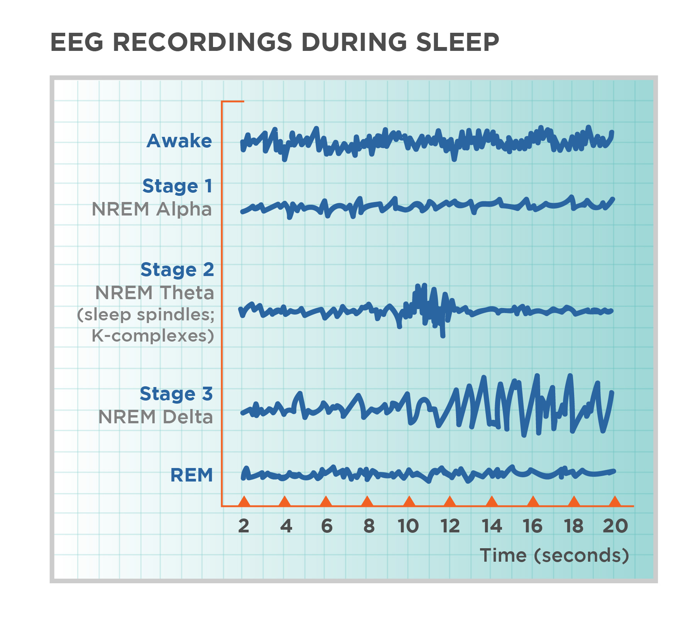

REM vs. Deep Sleep: Why the Cycle Order Matters

You spend roughly a quarter of your night in REM sleep. But if that REM arrives at the wrong time, it might as well not happen at all. A REM cycle at 4 AM does something completely different from a REM cycle at 7 AM. The sequence matters more than the total. And if you're getting your cycles out of order, you might as well be dreaming about spreadsheets for all the good it does you.
Most people think deep sleep is "the good one." It's not that simple. Deep sleep restores the body. REM restores the mind. You need both. But the order — which comes first, which comes last, what happens in between — determines whether you wake up feeling human or like a zombie who somehow still has to pay taxes.
I was confused about this for years. Not because I didn't understand the science — I have a PhD, I understood it fine. But I didn't feel it until I saw my own hypnogram, that jagged graph of sleep stages across a night, and realized I had been getting my cycles backwards for months.
Let's define the players before we talk about order. Deep sleep — also called N3 or slow-wave sleep — is your brain's cleaning crew. During deep sleep, your glymphatic system flushes out metabolic waste. Heart rate drops. Breathing slows. Blood pressure falls. If someone tried to wake you during deep sleep, they'd need a foghorn and possibly a bucket of cold water. Deep sleep happens mostly in the first half of the night. From bedtime until about 2 AM, your brain is in heavy cleaning mode. Growth hormone releases. Immune system gets a boost. Muscles repair themselves from that workout you're still sore from three days later.
REM sleep is different. It's your brain's filing system. During REM, your brain takes the events of the day — conversations, what you learned, that embarrassing thing you said in the meeting — and decides what to keep and what to throw away. REM is also when you dream. Those wild, nonsensical dreams where you're in a grocery store with your third-grade teacher? That's your brain making connections. Sometimes useful. Sometimes nonsense. REM happens mostly in the second half of the night. The first REM period might be ten minutes. The last one can stretch to forty-five minutes or more.
The critical thing: you cannot get deep sleep in the morning. You cannot get REM right after you fall asleep. The brain has a schedule, and the schedule is not negotiable.
A woman named Jenna came to me in 2022. Her daughter was eight months old. Jenna wasn't just tired — she was broken. She'd go to bed at 10 PM. Her daughter woke up at midnight, 2 AM, and 4 AM. Jenna nursed her back to sleep each time. Then her alarm went off at 6:30 AM.
On paper, she got about six hours of sleep. Not great, but not catastrophic. Yet she felt like she hadn't slept at all. I had her wear a sleep tracker for a week — not because I love trackers, but because I needed to see her hypnogram. And what it showed explained everything.
From 10 PM to midnight, Jenna got about forty-five minutes of deep sleep. Normal for the first cycle. Then her daughter woke her up at midnight — right in the middle of deep sleep. She woke up groggy, disoriented. She went back to sleep around 12:30 AM. But her brain had already started its deep sleep window. The second half of the night is supposed to be REM-heavy. Because she was up for thirty minutes, her brain got confused. It tried to go back into deep sleep. It couldn't. So she got fragmented light sleep instead.
Then her daughter woke her up again at 2 AM. And again at 4 AM. By 6:30 AM, Jenna had gotten almost zero REM sleep. Her deep sleep was also fragmented. Total deep sleep: fifty-five minutes. Total REM: twelve minutes. Twelve minutes. That's not REM. That's a nap.
She was waking up with a brain full of unprocessed emotional memory from the day, plus a body that hadn't completed its cleaning cycle. No wonder she felt like death.
I told Jenna: "You can't control when your daughter wakes up. But you can control your bedtime. If you go to bed earlier — say, 9 PM — you'll get your deep sleep done before the midnight wake-up. Then when you wake up at midnight, you're coming out of a completed deep sleep cycle, not interrupting one."
She tried it. Moved her bedtime to 9 PM. She still got woken up at midnight, 2 AM, and 4 AM. But her hypnogram looked completely different. From 9 PM to midnight: ninety minutes of solid deep sleep. Two full cycles completed before the first wake-up. At midnight, she woke up between cycles, not in the middle. Less groggy. From 12:30 AM to 2 AM: a mix of light sleep and the beginning of REM. The 2 AM wake-up was annoying, but she wasn't losing deep sleep because deep sleep was already done. By 4 AM, she had already gotten her REM for the night.
Her REM total went from twelve minutes to sixty-eight minutes. Deep sleep went from fifty-five minutes to a hundred and two minutes. She still felt tired — she had a baby — but she stopped feeling like she was dying. The order mattered more than the total.
There's a study from Matthew Walker's lab at Berkeley — I think it was 2014, maybe 2015, I'd need to check my notes — that looked at what happens when you deprive people of REM versus deep sleep. They kept people up late so they missed their deep sleep window, then let them sleep in to catch REM. The result? People who missed deep sleep performed worse on physical tasks — grip strength, reaction time, immune function. People who missed REM performed worse on emotional regulation and memory. They were more irritable, more likely to snap at someone, less able to learn new information.
Another study, from 2017 or 2018, found that the order of cycles predicts morning alertness better than total sleep time. People who got their deep sleep early and REM late reported feeling more rested than people who got the same total hours but with fragmented order.
Why? Because deep sleep clears the metabolic debt from the day. If you don't clear that debt, you wake up with a hangover — literally called sleep inertia. Then REM processes emotional memory. If you don't get that, you wake up irritable and forgetful. When Jenna was missing her deep sleep because of the midnight wake-ups, she had both problems: physical hangover and emotional fog. She cried when she saw her first improved hypnogram. Not because she was happy. Because she was angry that she had spent eight months feeling terrible when the fix was just moving her bedtime by an hour.
The "eight hours of sleep" recommendation isn't based on individual biology. It's based on population averages. Some people need seven hours. Some need nine. A very small number can function on six if their cycle order is perfect. Alex is a software engineer in Denver. He slept exactly six and a half hours every night by choice. He felt fine. I didn't believe him. I made him wear a tracker for a week.
His hypnogram showed six and a half hours of sleep, but his cycle order was perfect. He went to bed at 11 PM. Woke up at 5:30 AM — no alarm, just natural. His deep sleep happened from 11 PM to 1:30 AM. His REM happened from 3 AM to 5:30 AM. No middle-of-the-night wake-ups. He fell asleep in five minutes. Total deep sleep: ninety-eight minutes. Total REM: a hundred and twelve minutes. That's better than most people get in eight hours.
So when someone tells you that you need eight hours, ask them: "Cycles or hours?" Because hours without the right order are just time in bed. Cycles with the right order are actual restoration.
How do you know if your order is off? Answer three questions. First: do you wake up feeling physically heavy? Like your limbs are made of concrete? That's a deep sleep deficit. You're not getting enough deep sleep in the first half of the night. Fix: move your bedtime earlier. Even thirty minutes can make a difference because deep sleep happens in the first few hours. If you go to bed at midnight and wake up at 7 AM, you've shifted your deep sleep window later — but your brain still wants it early. You're fighting your own biology.
Second: do you wake up feeling emotionally raw? Like you might cry if someone looks at you wrong? That's a REM deficit. You're not getting enough REM in the second half of the night. Fix: don't cut your sleep short in the morning. Those last ninety minutes — from your final REM cycle to wake-up — are REM-dense. If your alarm cuts that off, you lose your best REM of the night. Try waking up thirty minutes later, or go to bed thirty minutes earlier so you can still wake up at the same time but get a full last cycle.
Third: do you wake up gasping or with your heart racing? That's not a cycle problem. That's sleep apnea. Go see a doctor. I'm a sleep coach, not a physician.
I had all three of these problems at different points. The physical heaviness hit me when Leo was a baby — I was going to bed too late because I was trying to get work done. The emotional rawness hit me when I started waking up at 5 AM to exercise — I was cutting off my REM. The gasping never happened to me, thank god. Once I figured out the order problem, I fixed it in about two weeks. Moved my bedtime earlier by twenty minutes. Pushed my wake-up later by fifteen minutes. Forty minutes of schedule shift. And my morning fog cleared.
Naps follow the same logic but with a twist. A ninety-minute nap that starts at 2 PM will give you a full cycle: light sleep, deep sleep, REM, in that order. That's why a ninety-minute nap can be as restorative as a full night — because you're getting the complete sequence. But a ninety-minute nap that starts at 4 PM? You might get REM first because your brain's circadian rhythm is already shifting toward evening. That's why some people wake up from late naps feeling disoriented and weird. Their brain expected one order and got another.
The rule: naps before 3 PM are generally safe. Naps after 4 PM are risky. Naps between 3 and 4 PM depend on your personal chronotype. I'm a morning person. I can nap at 3 PM and feel great. My husband is a night owl. He naps at 3 PM and wakes up confused. He needs to nap at 1 PM.
Deep sleep cleans the body. REM cleans the mind. If you don't get deep sleep first, you can't get REM properly. So if you wake up tired, don't just assume you need more hours. Ask yourself: when did I go to bed? When did I wake up? And what woke me up in between? A guy named Marcus — I mentioned him in a previous post — changed his bedtime from 11:30 PM to 10:45 PM. Same wake-up time. Same total hours. But his deep sleep went up by forty percent because he caught the early window. He sent me a message: "I feel like I'm cheating." It's not cheating. It's just biology that most people don't know about.
P.S. My son Leo asked me the other day, "Mom, do I get deep sleep?" I told him yes, from 8 PM to 11 PM. He said, "So that's why I don't hear Daddy snoring." Kids are smarter than we give them credit for.